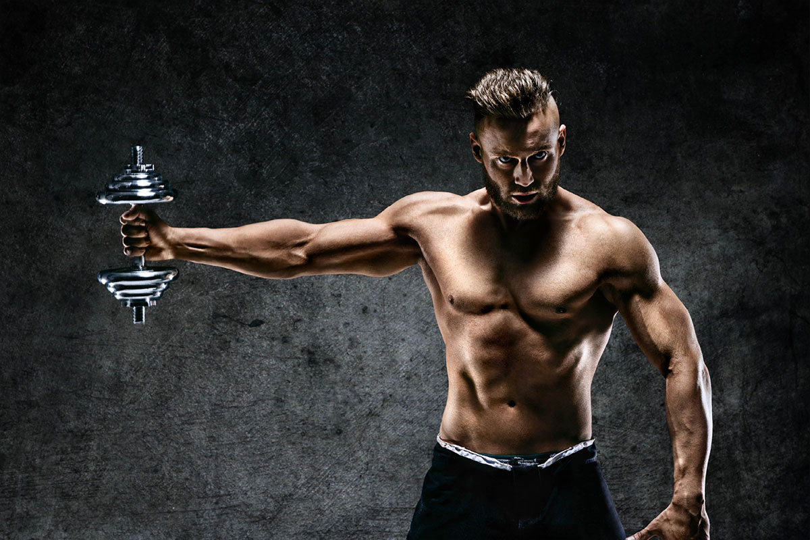
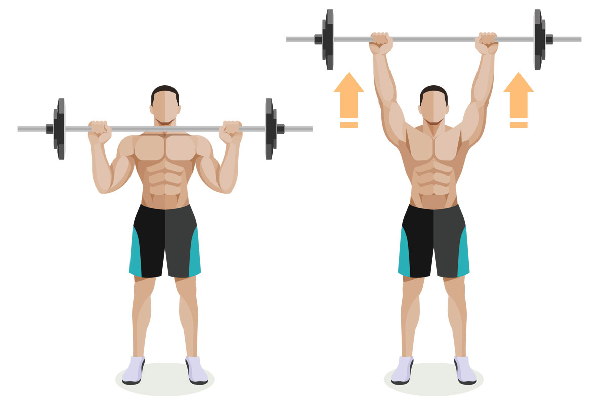
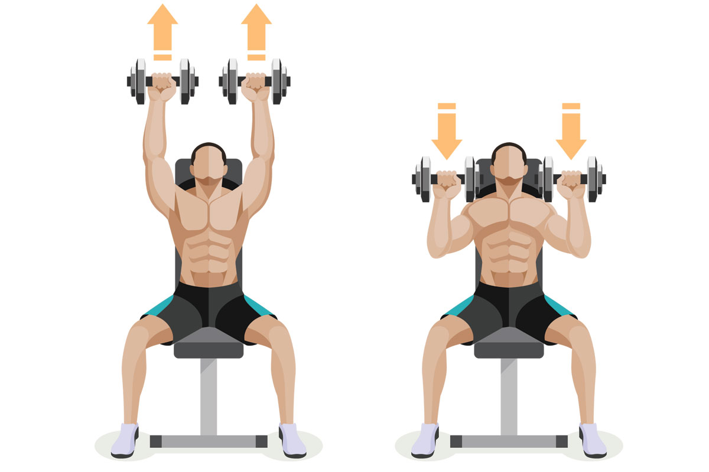
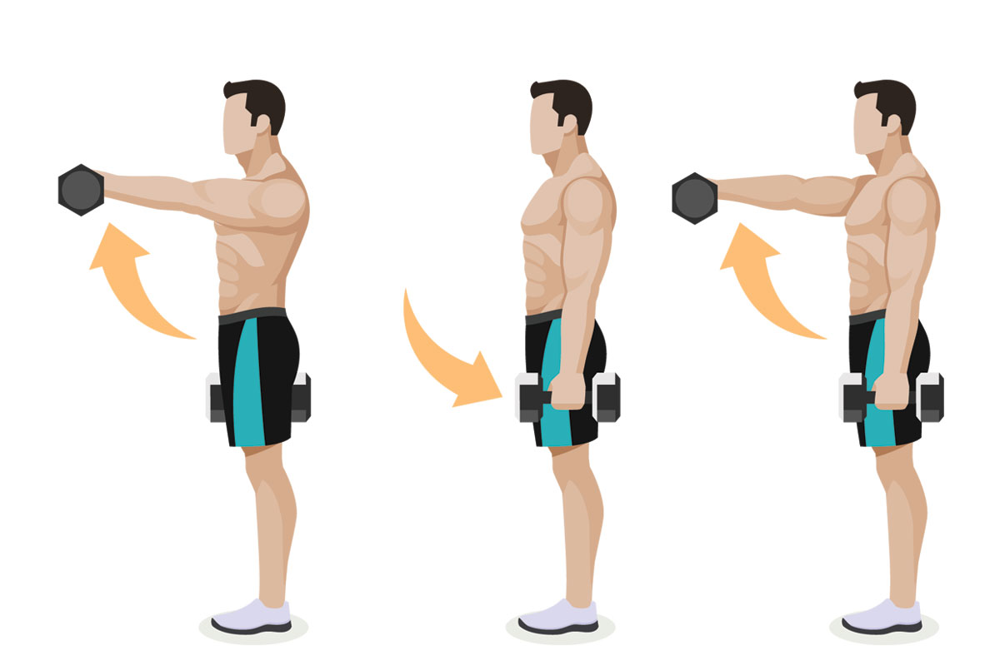
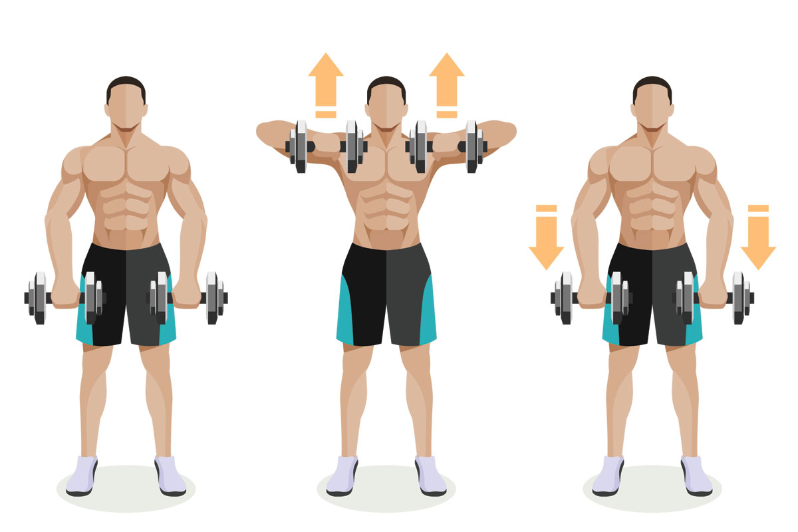
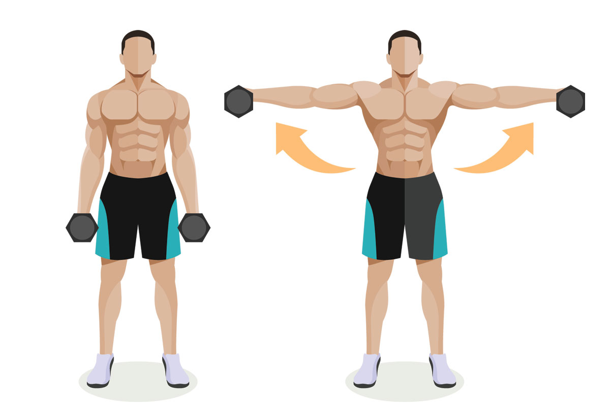
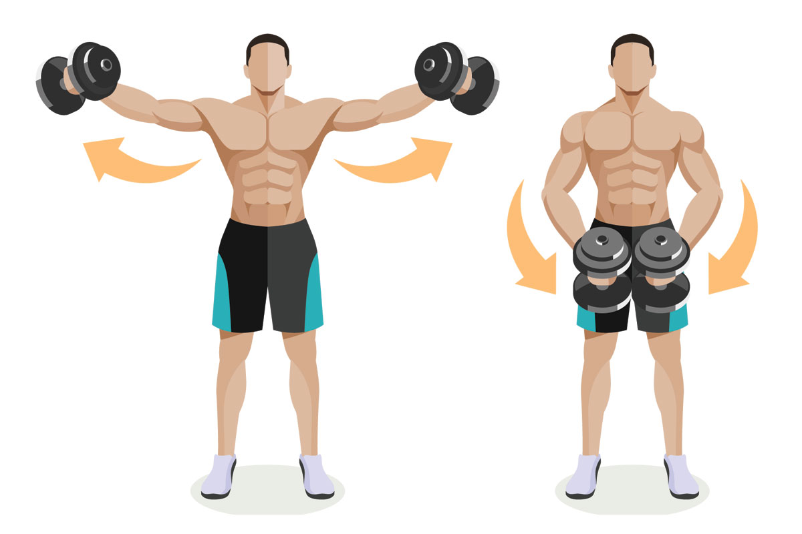

Мышцы плеча состоят их трех пучков — переднего, заднего и бокового. Каждый из них отвечает за выполнение определенного типа упражнений. Например, передняя часть среднего пучка выполняют жимовые функции, задняя часть среднего пучка и задняя дельта отвечают за тяговые функции.
Поскольку наибольший объем имеет средняя дельта, именно ей, как правило, отдается приоритет в тренировках. Базовым упражнением в этом случае является жим стоя — его можно выполнять как со штангой, так и гантелями. В свою очередь, разводки гантелей развивают боковые дельты.
Также мышцы плеча связаны с мускулатурой верхней части спины и трапециевидными мышцами. Именно поэтому правильная тренировка плеч должна строится на варьировании упражнений и проработке мышц под разными углами — кроме этого, на правильном сочетании дней тренинга.
// Читать дальше:
Главным упражнением на плечи является вертикальный жим штанги или гантелей. Также для тренировки на массу эффективны тяга штанги к подбородку и попеременный подъем гантелей — они развивают задние и средние пучки дельт, делая спину шире. Плюс, махи и подъемы в стороны придают плечам округлость и объем.
Отдельное внимание при тренировке плеч необходимо уделять проработке трапеций и мышц верхней части спины — их работа тесно связана с работой дельт. Лучшими упражнениями для этого станут махи с гантелями, выполняемые с ощущением вовлечения трапеций и сведением лопаток в верхней точке траектории.
// Тренировка плеч:

Наиболее эффективным упражнением для прокачки плеч и увеличения силовых показателей является жим штанги стоя. Данное упражнение входит в пятерку многосуставных базовых упражнений, важных для комплексного развития мускулатуры всего тела.
Правильная техника подразумевает поддержание пресса в осознанном напряжении — что поможет сбалансировать нагрузку. Поднятие штанги осуществляется на выдохе, во время движения трицепсы смотрят вперед. Кроме этого, плечевой сустав должен находиться в суставной сумке — вы должны чувствовать, что плечо имеет поддержку.
// Читать дальше:
Программа упражнений для плеч должна сочетать как штангу, так и гантели. Главным плюсом упражнений с гантелями является возможность акцентировать внимание на симметрии мышц — то есть, равномерно развивать дельтовидные мышцы. Жим штанги стоя увеличивает массу, а разведения — создают объем.
При этом упражнением, лучше всего влияющим на увеличение объема и массы мышц плеч считается тяга штанги к подбородку. Развивая задние и средние пучки дельт, оно быстро делает спину визуально шире. Чем шире хват штанги, тем больше нагрузки переходит с трапеции на дельты.
Эффективность тяги штанги к подбородку превышает различные подъемы гантелей перед собой и в стороны. Вариацией упражнения является попеременный подъем гантелей к подбородку. Возьмите гантели в обе руки, однако тяните к подбородку только одну. Вторая гантель должна выступать балансом и противовесом для более качественного распределения нагрузки на мышцы плечевого пояса.
Прокачку плеч лучше оставить на вторую половину тренировки в зале — силовые упражнения первой части тренинга подготовят суставы к нагрузкам. Сама тренировка должна состоять из жима с груди стоя и 2-3 изолирующих упражнений на плечи с гантелями (например, тяги к гантелей подбородку и разведений гантелей в стороны).
Вертикальные жимы гантелей или штанги на плечи выполняются в 3-4 подхода по 7-10 повторов с предварительной разминкой суставов. Каждое изолирующие упражнение выполняется в 2-3 подхода и 10-15 повторов со средним рабочим весом. Тренировку плеч рекомендуется проводить не чаще, чем 2 раза в неделю.

Плюсом тренировки плеч с гантелями (по сравнению с упражнениями со штангой) является вариативность хвата. Например, если гантели смотрят друг на друга, снижается нагрузка на плечевой сустав. Помимо прочего, жим может включать различные вращения.

Упражнение для тренировки переднего пучка дельтовидных мышц плеч. Гантели рекомендуется поднимать поочередно — так проще контролировать технику. Также следите за тем, чтобы пресс был напряжен, а корпус не раскачивался. В верхней точке траектории рука параллельна полу — не поднимайте гантель выше.

Лучшее упражнение на плечи, увеличивающее их объем и придающее округлость. Кроме этого, в работе участвуют трапециевидные мышцы и мускулатура верхней части спины.

Упражнение для боковых пучков дельтовидных мышц. При выполнении большой палец смотрит вниз, а плечевой сустав зафиксирован в одном положении.

Корпус при выполнении упражнения слегка наклонен вперед, плечи опущены как можно ниже — представляйте, словно трапециевидные мышцы прижимаются к спине.
Суперсет — это совмещение двух разных упражнений путем чередования их выполнения. Мышцы плеч крайне хорошо реагируют на подобную стратегию тренировок. Рекомендуется совмещать прокачку передних и задних дельт, а также двух упражнений на среднюю часть дельт. Кроме этого, в качестве продвинутой техники тренировок, можно использовать трисеты, прорабатывая все дельты в одном интенсивном подходе.
В свою очередь, дропсет — это уменьшение рабочего веса и увеличение количества повторов от подхода к подходу. В каждый подход сбрасывается до 20-25% веса, всего выполняется 6-8 подходов упражнения без перерыва. Дропсет и связанный с ним пампинг является лучшим завершением тренинга плеч. и, как правило, каждую тренировку дропсет выполняется на разные пучки дельт.
Тренировка мышц плеч должна строится на комбинаций тяжелых вертикальных жимов (например, жима штанги стоя) и изолирующих упражнений с гантелями, выполняемых со средним весом и с идеальной техникой — это позволит как равномерно развивать дельтовидные мышцы, так и минимизировать риск получения травмы (плечевой сустав является одним из наиболее хрупких).